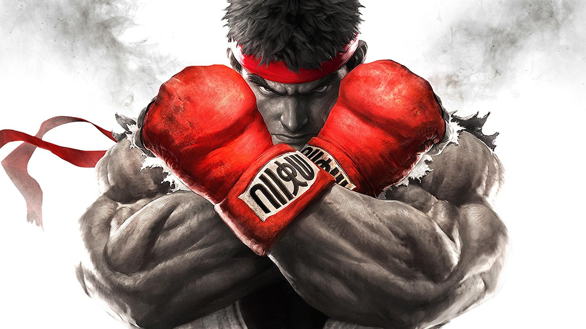
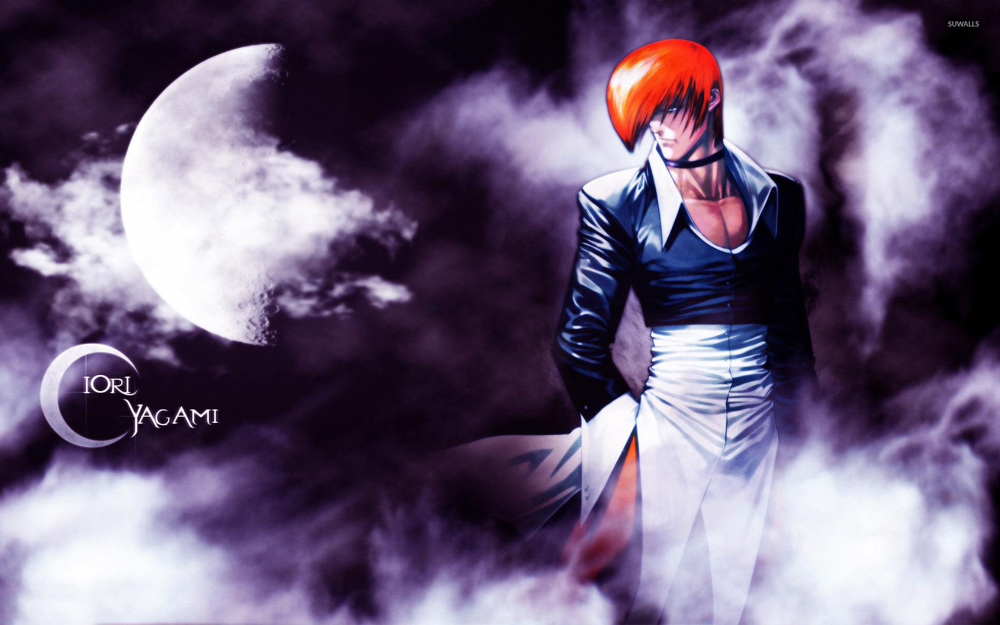

Es una serie de videojuegos de lucha creada por la empresa japonesa Capcom. El primer título, Street Fighter, apareció en el año 1987 en Arcade y gozó de cierta popularidad, pero fue su continuación, Street Fighter II, la que provocó una verdadera revolución y provocó el "boom" de los juegos de lucha en salones recreativos. Se pusieron a la venta versiones caseras para consolas por todo el mundo y las ventas fueron millonarias. Se sucedieron varias versiones de este segundo capítulo, seguido de nuevos capítulos, crossover con personajes de franquicias como Marvel Comics o SNK Playmore, películas, series de televisión y todo tipo de merchandising. La serie Street Fighter sigue activa a día de hoy.

El torneo King of Fighters, de donde surge el nombre de esta serie, en realidad se originó en Fatal Fury, un juego de pelea clásico de SNK que es previo a la serie KOF. Fatal Fury 2 y Art of Fighting 2 también hacían uso de este torneo antes del lanzamiento de KOF '94.
El primer juego de la serie, The King Of Fighters, fue The King Of Fighters '94. El juego originalmente había sido diseñado para ser un combate de ensueño de personajes de varios títulos previos de la compañía, particularmente Fatal Fury conocido en Japón como Garou Densetsu, Art of Fighting, Ikari Warriors, Psycho Soldier, etc. El éxito del juego llevó a SNK a lanzar ediciones anuales del juego y nombrarlos según el año en el que salían. En 2004, SNK abandonó los lanzamientos anuales del juego y empezó a numerarlos de una manera más tradicional; el primer juego en ser lanzado de esta manera fue The King of Fighters XI. En 2004, SNK produjo el primer juego en 3D de la serie, KOF: Maximum Impact. El productor de la serie Maximum Impact, Falcoon, estableció que estos juegos pertenecen a una realidad diferente que los juegos de la serie original.